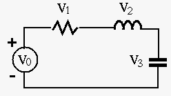
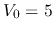
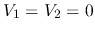
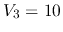
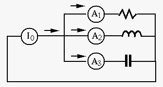
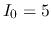
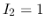
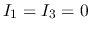
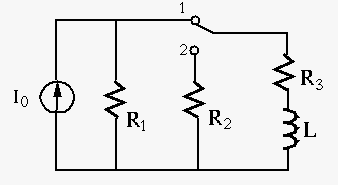

Solution: . , .

Solution: . , .

Solution:


Solution:
Find the frequency response function (FRF) of the circuit, and find the
cut-off frequency of the filter in terms of the given circuit
parameters  ,
,  ,
,  and
and  , so that
, where
, so that
, where  is the
frequency at which
is the
frequency at which
 reaches maximum.
reaches maximum.
Solution: Let